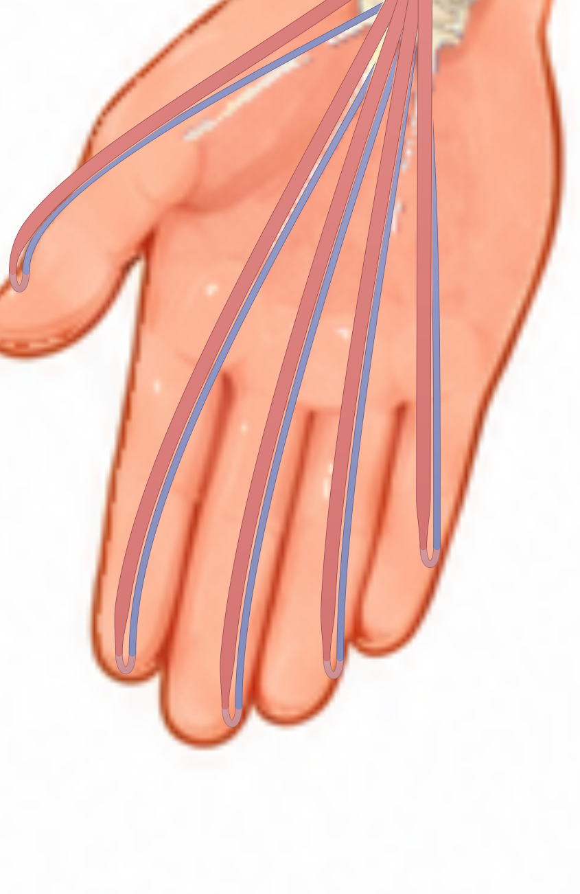
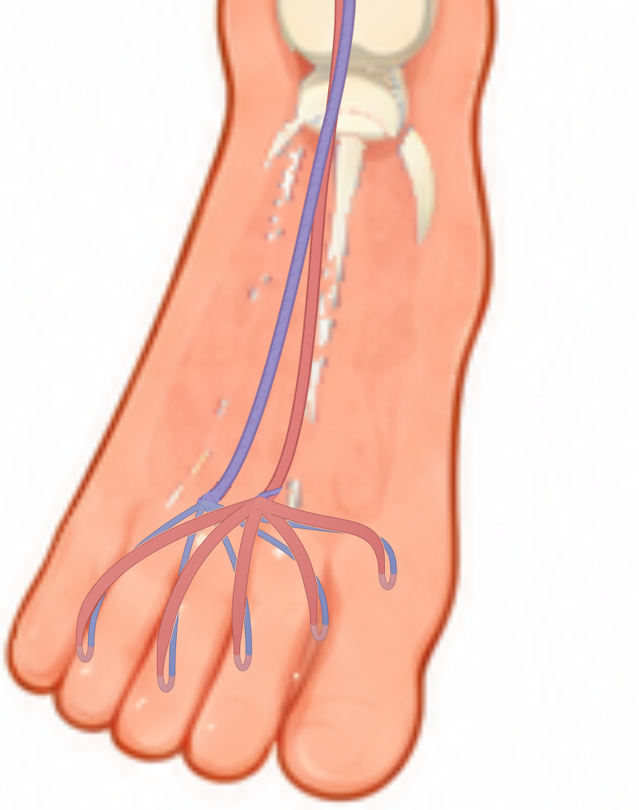
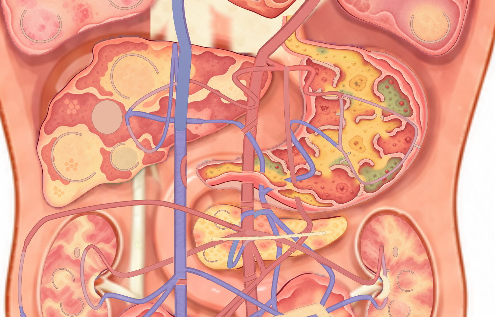
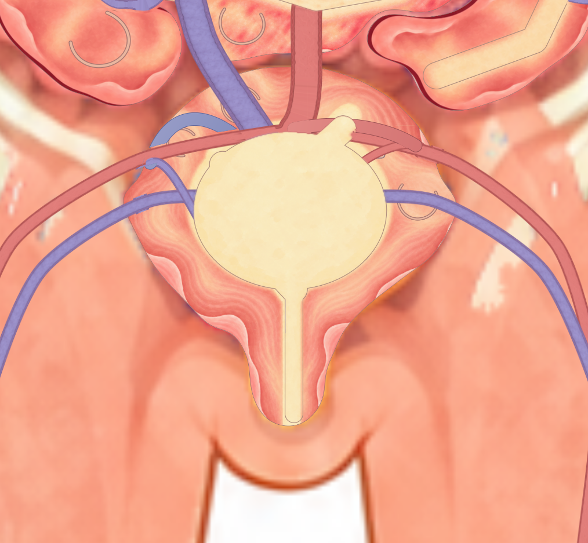
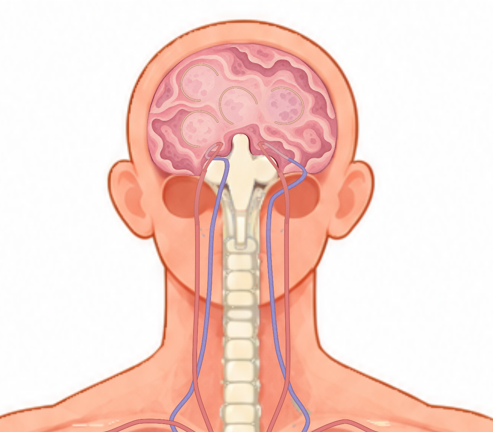
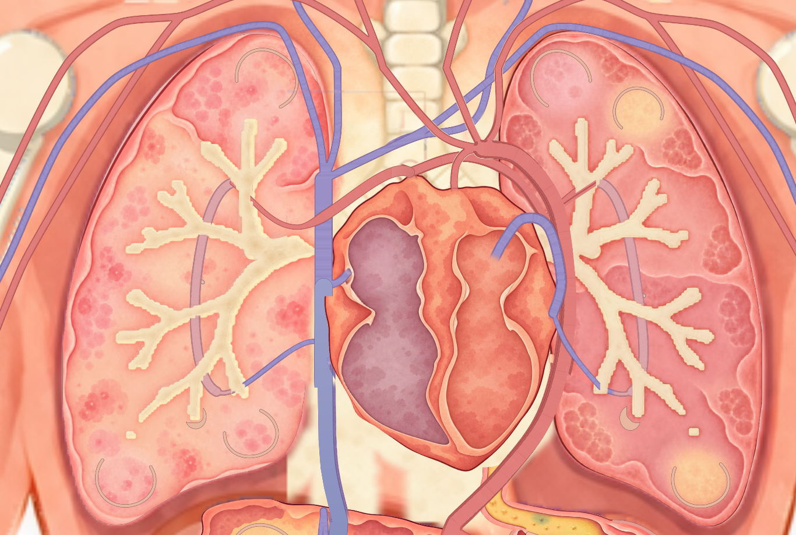

2026-10-14 · 六项问题已处理
重排70条血管路线，20条指趾回路延伸到末端。211条血管范围的422次双向点选、94次连接处移动、20条连续回路、36次器官接口往返及70个旧存档细胞迁移通过。
97处非连接交叉没有串线；资源仍为每绘制上下文43个图像槽。158项整合检查通过。
10条手指回路延伸到对应末端，供血、交换和回流仍通过原有编号连接。

10条脚趾回路从脚背移向对应脚趾，保留原脚部主干节点。修后视图向下扩展到完整脚趾。

缩短胰腺供血的绕行，整理胰腺回流与肾脏供血接近路线；器官内接口和末端4个源坐标单位的接近段保留。

缩短上方红色回折，蓝色回流沿上壁平滑接近，留出可点击的可见段。

供血入口改为平滑接近，减少掉头；组织地面和既有交换区保持原有规则。

在真实血管域内补齐上方肺动脉缺口，统一下腔静脉的局部显示，并同步修补区域的细胞可见层级。

另一只手 · 另一只脚